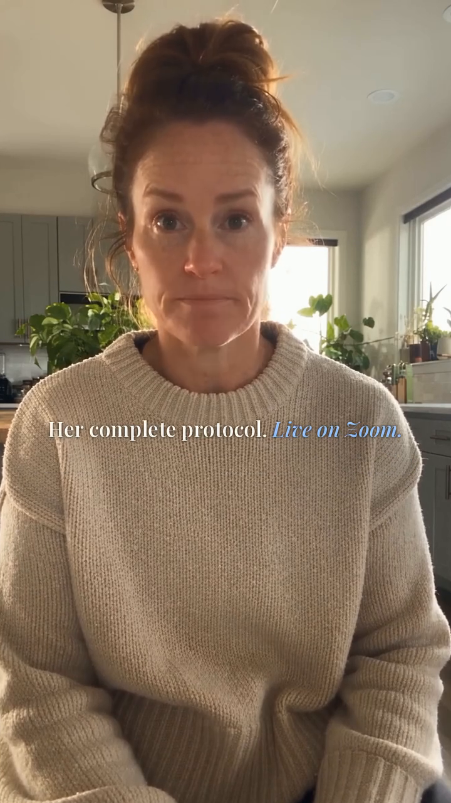
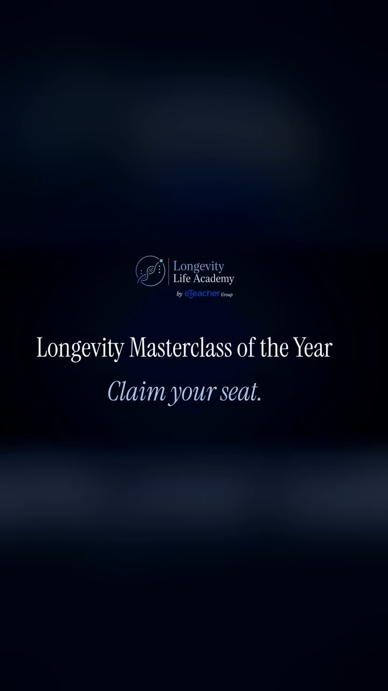
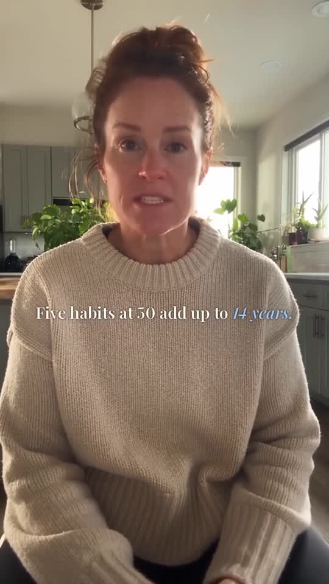
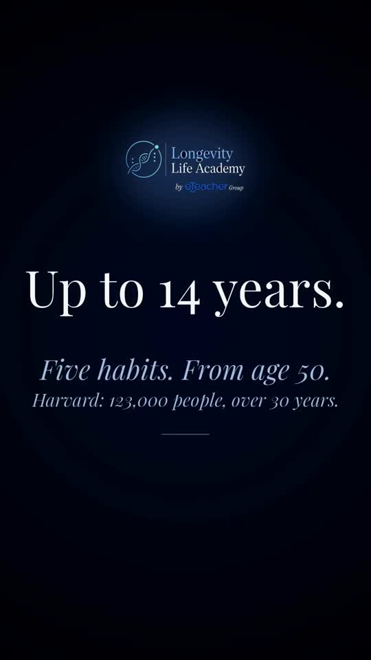
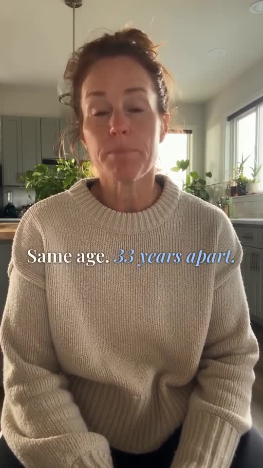
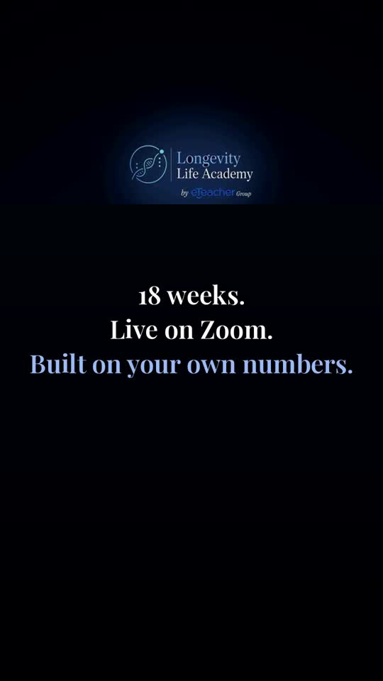
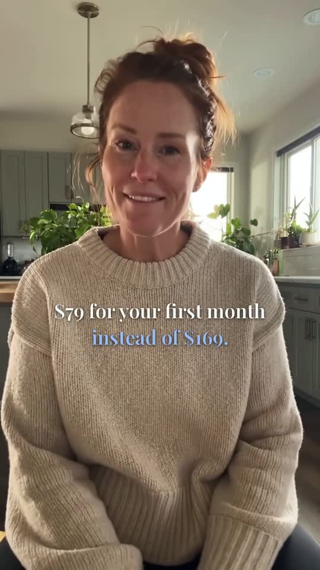
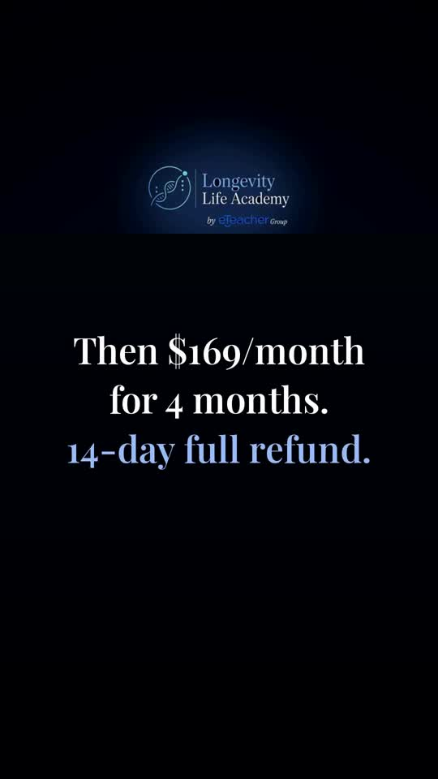
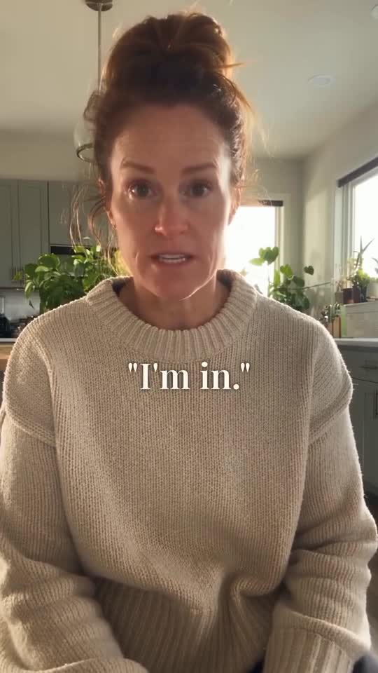

ad17 original video, unadjusted (68.78 s, 9:16)
Download ad17_original.mp4
Her original voice – Higgsfield job ea657df7, no music (29.9 s)
Download MP3 Download WAV (lossless)
Her voice isolated from ad17 (music removed)
Download WAV
Reference frames from ad17


This is transcribed from the approved November Blueprint preview (commit 9c546ab, Nov 2, 23:59 Israel time), with the agreed VIP line in place of the old "Plus a free VIP seat" line. Words in [brackets] were unclear in the audio; check them against the video. The captions file in section 7 confirms the on-screen wording.
0:00 Five habits at age 50 add up to 14 years to your life. 0:04 Harvard tracked 123,000 people for over 30 years. 0:10 People born the same year can be 33 years apart in biological age. 0:15 Everyone's talking about longevity right now, and almost nobody can prove it. 0:20 Julie Gibson Clark can. 0:22 (Julie) I'm Julie Gibson Clark. For over a year, I held the number two spot in the world for slowest aging. 0:27 In [2023], she out-aged Bryan Johnson and his $2 million a year, on about $100 a month. 0:34 Single mom, full-time job. 0:36 So how did she do it? 0:38 She didn't buy it. 0:39 She built her own longevity protocol. 0:42 Now she's founding faculty at Longevity Life Academy. 0:45 In their Longevity Blueprint, you build your own protocol, like she made. 0:49 18 weeks, live on Zoom, built on your own numbers, and a glucose sensor included. 0:55 In November, it's $79 for your first month instead of $169. 1:00 NEW: And you get a VIP seat at Julie Gibson Clark's live masterclass on November 14th, with a private Q&A just for Blueprint members. 1:05 Then it's $169 a month for four months, with a 14-day full refund. 1:10 Honestly? I'm in.
Download the approved Blueprint version (before the VIP line change)
And you get a VIP seat at Julie Gibson Clark's live masterclass on November 14th, with a private Q&A just for Blueprint members.
Caption 1: A VIP seat at Julie Gibson Clark's / live masterclass · Nov 14 Caption 2 (switches as she says "with a private Q&A"): Private Q&A for / Blueprint members Never use the words "free" or "bonus".
Master = the approved Blueprint version (section 7), NOT the raw ad17. Replace 1:00.76 – 1:05.48 only. ad17 is the reference for her look, voice and style.
Job: ea657df7-3966-4cbc-a45b-0dd9865408ee (1 Oct 2026) Model: Seedance 2.5, video extension, forward, 1080p 9:16, audio on, high bitrate Source video: 0fa24878-54a0-4d85-9311-a7eb71bc0f7a Voice: Seedance native voice from the prompt (no voice ID / no character ID)
Original prompt (verbatim):
Continue seamlessly from the last frame: same woman, same oatmeal knit sweater, same sunlit kitchen, same medium-wide framing with space above her head, same lighting, same voice. VOICE: standard General American English accent, Midwestern United States, native speaker from Ohio - absolutely NOT Australian, NOT British. Warm, real, conversational with natural breaths; quietly impressed when she talks about Julie, plain and decisive on the last line. No cuts, no camera moves, no zoom, no music, no text, no captions. Hands gesture naturally. Speak at about 165 words per minute. Exact speech: "Everyone's talking about longevity right now, and almost nobody can prove it. Julie Gibson Clark can. In twenty twenty-three she out-aged Bryan Johnson and his two million dollars a year, on about a hundred dollars a month. Single mom, full-time job. She's a founding teacher at Longevity Life Academy, and she's teaching her exact protocol live on Zoom, for one hour. Forty-nine dollars. Honestly? I'm in." End speaking before 28 seconds, then a small decisive nod and a relaxed look into the lens.
New prompt (same recipe, only the speech changed):
Continue seamlessly from the last frame: same woman, same oatmeal knit sweater, same sunlit kitchen, same medium-wide framing with space above her head, same lighting, same voice. VOICE: standard General American English accent, Midwestern United States, native speaker from Ohio - absolutely NOT Australian, NOT British. Warm, real, conversational with natural breaths; upbeat and confident. No cuts, no camera moves, no zoom, no music, no text, no captions. Hands still and relaxed. Speak at about 165 words per minute. Exact speech: "And you get a VIP seat at Julie Gibson Clark's live masterclass on November 14th, with a private Q&A just for Blueprint members." End speaking before 9 seconds, then a relaxed look into the lens.
Outputs: 1080x1920 9:16 MP4 and 1080x1080 1:1 MP4, 24 fps, H.264, -14 LUFS. Reject if: lip-sync off, blur or warping on mouth, teeth or fingers, visible jump at the joins, voice differs from her original, captions wrong, any "free" or "bonus".
Master file: Approved Blueprint version, 74.79 s 1080x1920, 24 fps, H.264, AAC 48 kHz stereo, -14.4 LUFS.
Change ONLY the segment 1:00.76 – 1:05.48 ("Plus a free VIP seat ... November 14th").
Everything else is frozen:
- Total length: 74.79 s, no longer and no shorter.
- Music: the original music track, same cue, same timing, same volume, running continuously under the new line. Do not replace, re-time, re-mix, duck differently, or add music.
- Voiceover and Julie's on-camera lines: untouched outside the changed segment.
- Shot cuts at 7.92, 10.42, 21.83, 31.63, 49.67, 55.58, 65.25, 70.29, 72.04 s: untouched.
- End sequence 1:05.25 – 1:14.79 ($169/month card, "Honestly? I'm in." and the final frames): untouched, frame for frame.
- Logo, colours, fonts, caption position, safe zones: untouched.
- No new graphics, no new transitions, no watermark, no added text.
- Joins: 20 ms audio crossfades, no visual jump at 1:00.76 or 1:05.48.
Font: Playfair Display SemiBold, 66 px (cards 72–90 px), centred, at y=1000 px of 1920.
Colours: line 1 white #FFFFFF, highlight line light blue #96BEFF.
Shadow: black at 78% opacity, offset 3 px down, 5 px Gaussian blur.
Line spacing: 1.35 x font size.
Navy cards (18 weeks, $169/month) use the dark navy gradient background with the logo kept in the top 30%.
Existing captions, in order (keep all except c6):
c1a So how did she do it? / She didn't buy it.
c1b She built her own / longevity protocol.
c2 Now she's founding faculty at / Longevity Life Academy.
c3a In their Longevity Blueprint,
c3b you build your own protocol, / like she did.
c4a 18 weeks. / Live on Zoom. / Built on your own numbers. (navy card)
c4b ... + Glucose sensor included. (navy card)
c5a Sign up in November:
c5b $79 for your first month / instead of $169.
c6 REPLACE with: A VIP seat at Julie Gibson Clark's / live masterclass · Nov 14
then: Private Q&A for / Blueprint members
c7 Then $169/month / for 4 months. / 14-day full refund. (navy card)
      
Music only (WAV) Voices only (WAV) Full original mix
The stems were separated by AI, so use the music stem only to bridge the changed segment. Keep the original mix everywhere else.
- Never use the words "free" or "bonus". The VIP seat is part of what's included in the course. - This is a Longevity Blueprint ad: no masterclass-ad captions or text anywhere. - The new line must be her original voice (file in section 1) with real on-camera lip-sync. No cutaway covering the line. - Deliver 9:16 1080x1920 and 1:1 1080x1080 (crop from 9:16 at y=300, captions inside crop).